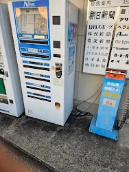

・撮影場所
大阪市 中央区道頓堀（撮影＝自分）
・撮影日
2022年12月（高2の修学旅行）
⭐️写真について
中座くいだおれビルに佇む1人のくいだおれ太郎（人形）が中央を陣取っており、とても印象的だった。
太郎感が全くなく、そもそも何故「くいだおれ」という名前にしたのか謎だ。調べたところくいだおれは元々あった飲食店の名称を元にしたモノだった。
校章のような謎の「中座」マークには昔からの伝統を感じる。24時間年中無休で働く”くいだおれ”太郎には涙を禁じ得ない。
気になる方は是非大阪まで足を運びアルカイックスマイルを拝んで欲しい。
第２回

・撮影場所
神奈川県 横須賀市 浦賀
・撮影日
10月13日
⭐️写真について
街では全く見かけない新聞の自販機。新聞屋さんの前に設置されておりとても印象的だった。
その隣に設置された謎の空気入れ。今は見ない昔の光景に哀愁を感じた。今度１枚新聞を買ってみようと思う。
空気入れ（自転車）を使うのは遠慮しておこう。
s